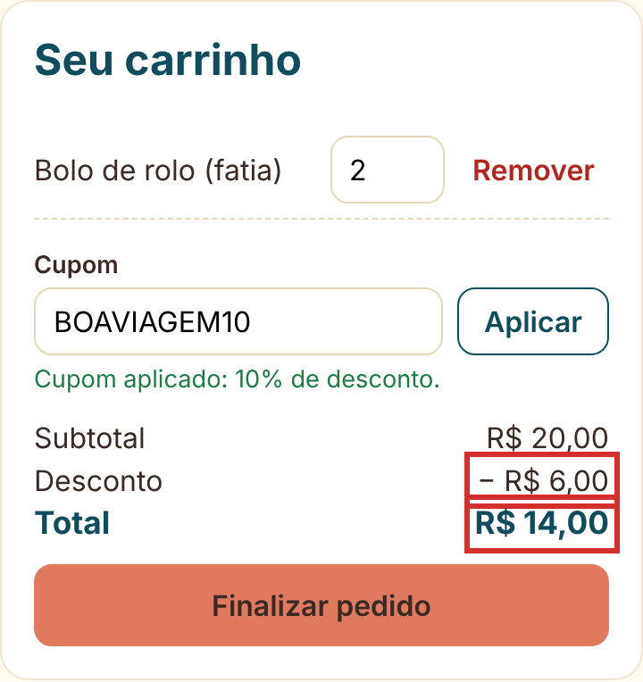

QA test automation · Concept project
Playwright · pytest · Page Objects · GitHub Actions
| BUG-002 | Coupon can be re-applied; discount stacks to 100% | Critical |
| BUG-004 | Total not updated after removing an item | High |
| BUG-003 | Phone field accepts letters | Medium |
| BUG-001 | Price sort orders values as text | Low |
| BUG-005 | Mobile layout overflow covered checkout button | Fixed |

Three clicks on “Aplicar” with the same coupon: 30% off instead of 10%. Every bug report has steps to reproduce, expected vs actual, severity, a screenshot and the likely cause in the code.